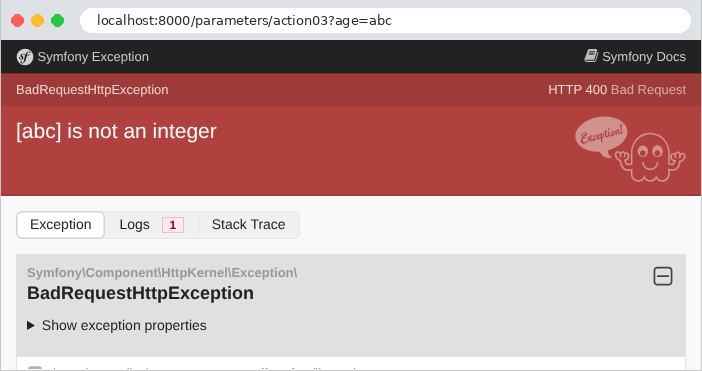
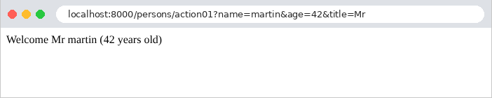

3. Das Action-Modell
Eine Action benötigt Informationen, die der Browser sendet: die Parameter der URL ([?name=martin&age=42]), Formularfelder, den JSON-Body der Anfrage und manchmal einen HTTP-Header der Anfrage. Der Originalkurs bezeichnet all diese Informationen als das Modell der Action. Dieses Kapitel zeigt, wie eine [Symfony]-Action diese Informationen abruft, in den richtigen Typ umwandelt und validiert. Dieser Vorgang heißt Datenbindung (Data Binding).
[Symfony] bietet Zugriff auf die Informationen der Anfrage über das [Request]-Objekt (Beispiel 05), in Form von Zeichenketten, samt einigen Konvertierungsmethoden. Es kann diese Informationen außerdem binden (an die Parameter einer Action anhand von Attributen ([#[MapQueryParameter]], [#[MapQueryString]], [#[MapRequestPayload]]) und validieren mit seiner Validator-Komponente: Wir beschreiben die erwarteten Daten mithilfe von Constraints („erforderlich“, „eine ganze Zahl zwischen 0 und 150“ usw.), die als Attribute wie [PHP] geschrieben werden, und der Validator prüft, ob die Daten ihnen entsprechen. Wir lesen die Parameter zunächst manuell (Beispiel 07) und überlassen dann dem Framework ihre Konvertierung und Validierung (Beispiele 08 bis 12). Im nächsten Kapitel validieren dieselben Constraints die HTML-Formulare.
Beachten Sie die Terminologie: Im nächsten Kapitel bezeichnet das Wort „Modell“ vor allem die Daten, die eine Action an ihre View übergibt. Das Modell einer Action im Sinne dieses Kapitels ist das, was sie empfängt.
Die Beispiele 07 bis 12 werden auf dieselbe Weise ausgeführt wie die des vorigen Kapitels: ein im Beispielordner geöffnetes Terminal, [php -S localhost:8000 -t public]; [Ctrl-C] beendet den Server. Die meisten verwenden den Listener [ReadableJson] aus Beispiel 03, der ein lesbares JSON liefert. Ihre Konfigurationsdateien kommentieren wir nur dann, wenn sie etwas Neues einführen.
3.1. Beispiel 07: Die Parameter der URL
Die Parameter der URL sind der Teil, der auf das [?] folgt: [?name=martin&age=42]. Dieser Teil heißt Query-String. Jeder Parameter ist ein Paar der Form [name=value]; die Paare werden durch [&] getrennt. Der Controller [ParametersController]:
- Zeile 22: Die Eigenschaft [query] der Anfrage enthält die Parameter der URL in einer Parameter-„Bag“ (einem [InputBag]-Objekt), deren Methode [get] den – bereits dekodierten – Wert eines Parameters zurückgibt oder [null] , falls er fehlt;
- Zeile 23: Die Action zeigt den Wert und seinen Typ an: Die Funktion [get_debug_type] gibt den Namen des Typs eines Werts zurück. Ein aus der URL abgerufener Wert ist immer eine Zeichenkette ([string]). Der Operator [.] verkettet die interpolierte Zeichenkette und den Typ;
- Zeile 32: Die Methode [getInt] liest den Parameter und konvertiert ihn in eine ganze Zahl. Ein fehlender Parameter ergibt 0; ein Wert, der keine ganze Zahl ist ([abc]), führt zu einem 400-Fehler (Bad Request). Ebenso gibt es [getBoolean] ([1], [true], [on] und [yes] gelten als wahr), [getString], [getAlpha] (nur Buchstaben), [getDigits] (nur Ziffern), [getEnum] (eine Aufzählung);
- Zeilen 41–51: ein erforderlicher Parameter und eine manuelle Konvertierung, die zwischen den beiden möglichen Fehlern unterscheidet. [throw new BadRequestHttpException(message)] beendet den Vorgang mit einer 400-Antwort samt der Meldung (siehe Beispiel 03, in dem auch eine 404-Exception ausgelöst wurde). Die Funktion [filter_var] von [PHP] gibt mit dem Filter [FILTER_VALIDATE_INT] die in der Zeichenkette enthaltene ganze Zahl zurück oder [false] , wenn die Zeichenkette keine ganze Zahl ist;
- Zeile 58: Der zweite Parameter von [getInt] ist ein Standardwert, der verwendet wird, wenn der Parameter fehlt. Das ist typischerweise bei einer Seitennummer in einer Liste der Fall;
- Zeile 67: Die [PHP] -Variable muss nicht denselben Namen wie der Parameter der URL tragen. Suchmaschinen verwenden oft einen kurzen Parameter, [q] (query);
- Zeile 75: [all()] gibt alle Parameter der URL in einem assoziativen Array zurück, das die Action in JSON umwandelt (siehe Beispiel 03);
- Zeilen 81–85: der deklarative Ansatz. Das Attribut [#[MapQueryParameter]], das vor einen Action-Parameter gesetzt wird, verknüpft diesen Parameter mit dem gleichnamigen Parameter der URL und konvertiert ihn in den deklarierten Typ ([int]). Ein Parameter ohne Standardwert ist erforderlich: Fehlt er oder lässt er sich nicht konvertieren, führt das zu einem 404-Fehler (die URL verweist, wie geschrieben, auf keine gültige Seite). Ein Standardwert ([$page = 1]) macht ihn optional. Genau das leisten die Zeilen 41–51 in einer einzigen Zeile.
Testen wir jede Action mit [curl]. Zuerst mit vorhandenem Parameter, dann ohne:
Die Anführungszeichen um die URL sind in einem Terminal notwendig: Ohne sie würde die Shell [&] (das unter [Linux] einen Befehl im Hintergrund ausführt) und [?] interpretieren. Der Wert [null] wird beim Einfügen in eine Zeichenkette zu einer leeren Zeichenkette. Ein Wert mit Leerzeichen oder Sonderzeichen muss in der URL kodiert werden: Ein Leerzeichen wird zu [%20], und [&] wird zu [%26] (sonst würde es zwei Parameter trennen). Der Browser erledigt das automatisch; mit [curl] müssen Sie es selbst schreiben. [PHP] dekodiert den Wert, bevor die Action ihn liest:
Konvertierung mit [getInt] – erfolgreich, fehlgeschlagen, dann ohne Parameter:
[Symfony] weigert sich, [abc] in eine ganze Zahl zu konvertieren: Das ist ein Client-Fehler, daher der Code 400 („Input value 'age' cannot be converted to 'int'“). Ein fehlender Parameter dagegen ergibt stillschweigend 0: Die Action kann diesen Fall nicht von einem tatsächlich eingegebenen Alter von 0 unterscheiden. Der erforderliche Parameter der Action 03 fehlt und ist daher ungültig. Wir fordern eine JSON-Antwort an (Header [Accept], siehe Beispiel 03), die die Meldung der Exception enthält:
(Dieses kompakte JSON wird von unserem Listener nicht neu formatiert, siehe Beispiel 03). In einem Browser zeigt eine 400-Antwort im Debug-Modus die [Symfony]-Fehlerseite mit der Meldung an:

Der Standardwert und der umbenannte Parameter:
Alle Parameter auf einmal. Der Parameter [name] erscheint zweimal:
Der Parameter [name] behält nur seinen letzten Wert: Das ist eine Regel von [PHP], der wir in Beispiel 10 wieder begegnen. Das Alter ist eine Zeichenkette geblieben (["42"], in JSON in Anführungszeichen eingeschlossen): Es wurde keine Konvertierung angefordert. In einem Browser (hier [Chromium]) wird das JSON genau so angezeigt, wie der Server es formatiert hat; das Kontrollkästchen „Pretty-print“ würde es einrücken, wenn es nicht bereits eingerückt wäre. Die Adressleiste zeigt außerdem die Kodierung akzentuierter Zeichen in der URL ([é] wird zu [%C3%A9], mit seinen zwei Bytes in [UTF-8]):

Schließlich die Bindung über [#[MapQueryParameter]], mit und ohne den optionalen Parameter und dann mit einem ungültigen Alter:
Ohne den Parameter [age] würde die Meldung „Missing query parameter 'age'“ lauten. Der Code 404 mag überraschen: Das Attribut akzeptiert einen Parameter [validationFailedStatusCode], mit dem sich ein anderer wählen lässt ([#[MapQueryParameter(validationFailedStatusCode: 400)]]).
Dieses erste Beispiel veranschaulicht die Grenzen des manuellen Ansatzes: Für jeden Parameter müssen Sie das Lesen, die Konvertierung und die Behandlung fehlender Werte und Fehler schreiben. Bei zehn Parametern wäre der Code der Action von diesen Prüfungen überladen. [#[MapQueryParameter]] vereinfacht die Konvertierung, sagt aber nichts über die Regeln aus („eine Zeichenkette mit 2 bis 20 Zeichen“). Besser ist es, zu beschreiben, was erwartet wird, und das Framework die Prüfung vornehmen zu lassen. Genau das ist der Zweck des folgenden Beispiels.
3.2. Beispiel 08: Ein durch eine Klasse beschriebenes Action-Modell
Das Modell einer Action kann durch eine Klasse beschrieben werden: eine Eigenschaft pro erwartetem Parameter samt ihrem Typ und – in Form von Attributen – den Constraints , die sie erfüllen muss. [Symfony] erzeugt dann das Objekt selbst aus der Anfrage, validiert es und übergibt es an die Action. Die Constraints sind die Klassen der Validator-Komponente: [NotBlank] (erforderlich), [Length] (eine Länge), [Range] (ein Intervall), [Choice] (eine Liste von Werten), [Email], [Regex] ... [Symfony] stellt mehr als siebzig davon bereit.
3.2.1. Das Modell: src/Model/PersonModel.php
- Zeile 7: Import des Constraints-Namespace unter dem Kurznamen [Assert]: Die Constraints werden als [Assert\NotBlank], [Assert\Length] ... geschrieben. Das ist in allen [Symfony]-Projekten üblich;
- Zeilen 9–31: eine unveränderliche Klasse, deren Eigenschaften durch den Konstruktor initialisiert werden (Beispiel 03). Jede Eigenschaft hat einen Standardwert, [null], und einen nullable-Typ ([?string], [?int]: eine Zeichenkette oder [null]): Fehlt ein Parameter in der URL, ist die Eigenschaft standardmäßig [null], und ein Constraint bestimmt, ob sie erforderlich war. Das ist die übliche Art, diese Klassen zu schreiben;
- Zeilen 14–18: Der Name ist erforderlich ([NotBlank] weist [null] und eine leere Zeichenkette zurück) und muss aus 2 bis 20 Zeichen bestehen ([Length]). Der Constraint [Sequentially] prüft die darin enthaltenen Constraints der Reihe nach und hält beim ersten fehlgeschlagenen an: Ein leerer Name erzeugt nur einen Fehler, nicht zwei. Die Parameter der Constraints sind benannt ([min: 2]), eine Anforderung seit [Symfony] 8;
- Zeilen 20–22: Das Alter ist erforderlich ([NotNull]) und muss zwischen 0 und 150 liegen ([Range]). Sein Typ ist [?int]: [Symfony] wandelt die Zeichenkette aus der URL in eine ganze Zahl um;
- Zeilen 24–26: Die Anrede ist erforderlich und muss einer der drei aufgeführten Werte sein ([Choice]);
- Zeilen 28–29: Die E-Mail-Adresse ist optional (kein Constraint: [NotBlank]); falls angegeben, muss sie gültig sein. Mit Ausnahme eines Constraints, [NotBlank], akzeptieren alle übrigen [null]: Sie prüfen nur die vorhandenen Werte.
Dieses Modell beschreibt die erwarteten Daten; es enthält keine Validierungsanweisungen. Man spricht von einem deklarativen Stil.
3.2.2. Die Action: src/Controller/PersonsController.php
- Zeile 21: Das Attribut [#[MapQueryString]] weist [Symfony] an, den Parameter [$person] aus den Parametern der URL zu erzeugen. Ein Argument-Resolver (Beispiel 05) erledigt diese Aufgabe in zwei Schritten. Zuerst konvertiert er: Mithilfe des Serializers erzeugt er ein [PersonModel]-Objekt, in dem jede Eigenschaft den gleichnamigen Parameter der URL erhält, umgewandelt in den entsprechenden Typ. Danach validiert er das Objekt: Er prüft jeden Constraint jeder Eigenschaft. Ist alles korrekt, wird die Action aufgerufen. Andernfalls löst er eine Exception aus (eine [HttpException] mit dem Code 404, die eine [ValidationFailedException] enthält, die ihrerseits die Liste aller Fehler enthält, nicht nur des ersten), und die Action wird nie aufgerufen: Sie muss sich daher nicht um ungültige Daten kümmern;
- Zeilen 23–27: Die Action gibt die empfangenen Parameter unverändert zurück, gefolgt vom [PersonModel]-Objekt und dem Typ des Alters, um den Unterschied zu veranschaulichen.
Wer behandelt die Exception? Standardmäßig [Symfony] selbst, über eine 404-Fehlerantwort (oder 422 bei [#[MapRequestPayload]], Beispiel 11): seine Fehlerseite oder, für einen Client, der JSON anfordert, ein Dokument, das die Fehler im Einzelnen aufführt. Hier wollen wir in jedem Fall eine Fehlerantwort in JSON mit dem Statuscode 400 und in unserem eigenen Format. Das ist die Aufgabe eines Listeners.
3.2.3. Fehlerbehandlung: src/EventListener/ValidationErrors.php
- Zeile 15: ein Listener für das Ereignis [kernel.exception] (die Konstante [KernelEvents::EXCEPTION]). [Symfony] löst dieses Ereignis aus, wenn während der Action oder bei der Vorbereitung ihrer Parameter eine Exception auftritt, bevor die Action ihre eigene Fehlerantwort erzeugt. So deklariert, gilt der Listener für alle Actions der Anwendung: Jede Action, die ein Modell validiert, profitiert davon, ohne dass eine einzige Zeile Fehlerbehandlungscode geschrieben werden muss;
- Zeile 22: Das Ereignis, ein [ExceptionEvent]-Objekt, trägt die Exception ([getThrowable()]). Die von [#[MapQueryString]] ausgelöste Exception ist eine HTTP-Exception; [getPrevious()] gibt die Exception zurück, die sie verursacht hat – die Validierungs-Exception;
- Zeilen 23–25: Ist es kein Validierungsfehler, tut der Listener nichts: [Symfony] behandelt die Exception wie gewohnt. Der Operator [!] („nicht“) kehrt die Bedingung um;
- Zeilen 26–29: [getViolations()] gibt die Liste der Fehler zurück, die (Constraint-) Verletzungen (Violations) genannt werden. Jede Verletzung hat einen Pfad ([getPropertyPath()], den Namen der fehlerhaften Eigenschaft) und eine Meldung. [$errors[] = ...] fügt am Ende des Arrays [$errors] ein Element hinzu;
- Zeile 31: [setResponse] liefert dem Ereignis eine Antwort: eine JSON-Antwort mit dem Statuscode 400. [Symfony] sendet sie anstelle seiner Fehlerseite (und wie jede Antwort durchläuft sie den Listener [ReadableJson]).
3.2.4. Ausführung
Ein gültiges Modell:
Die empfangenen Parameter sind Zeichenketten; das [PersonModel]-Objekt enthält das Alter als ganze Zahl (in JSON ohne Anführungszeichen), und die fehlende Adresse ist [null]. Ein von Leerzeichen ([%20]) umgebener Name und eine vorhandene Adresse:
Die den Namen umgebenden Leerzeichen blieben erhalten: [Symfony] verändert die empfangenen Daten nicht. Ein Constraint kann sie bei der Validierung ignorieren ([new Assert\Length(min: 2, normalizer: 'trim')]), doch der Wert bleibt der gesendete. Im nächsten Kapitel entfernt die Form-Komponente diese Leerzeichen. Nun ohne Parameter: Die drei erforderlichen Felder fehlen.
Vier ungültige Felder auf einmal:
Alle Fehler werden auf einmal gemeldet, sodass der Benutzer alles in einem Zug korrigieren kann. Schließlich ein Alter, das keine Zahl ist:
Diesmal wird nur ein Fehler gemeldet, obwohl Name, Anrede und Adresse weiterhin ungültig sind. Das ist das Ergebnis des zweistufigen Vorgangs von [#[MapQueryString]]: Die Konvertierung schlug fehl ([abc] lässt sich nicht in eine ganze Zahl umwandeln), sodass das Objekt nicht erzeugt werden konnte und die Validierung – die das Objekt prüft – nicht stattfand. Die Meldungen sind auf Englisch, der Standardsprache von [Symfony]. Das folgende Beispiel passt einige davon an.
3.3. Beispiel 09: Validierung durch die Action
In Beispiel 08 unterbricht ein ungültiges Modell die Action, und der Listener der Anwendung antwortet. Das ist praktisch für eine API, deren Clients Programme sind, die eine standardisierte Fehlerantwort erwarten. Eine Webseite zieht es jedoch oft vor, das Formular erneut anzuzeigen – und zwar mit Fehlermeldungen: In diesem Fall muss die Action entscheiden, was mit einem ungültigen Modell geschieht. Sie ruft den Validator selbst auf.
3.3.1. Das Modell: src/Model/PersonInput.php
Diesmal beschreibt das Modell die Eingabe genau so, wie sie empfangen wird: Zeichenketten, die die Action selbst in das Objekt kopiert. Seine Eigenschaften sind daher gewöhnlich (weder befördert noch [readonly]), und alle haben den Typ [?string], auch das Alter:
- Zeilen 19–24: Das Alter ist eine Zeichenkette, die vorhanden sein muss ([NotBlank]), nur Ziffern enthalten darf ([Type('digit')], das prüft, ob eine Zeichenkette nur Ziffern enthält) und deren Wert zwischen 0 und 150 liegen muss ([Range] akzeptiert eine Zeichenkette, die eine Zahl darstellt). Dank [Sequentially] wird ein Alter [abc] nur einmal gemeldet. Der Parameter [message] ersetzt die Meldung des Constraints durch unsere eigene: Jeder Constraint hat diesen Parameter (oder mehrere, wenn er mehrere Arten von Fehlern kennt, wie [minMessage] und [maxMessage] bei [Length]);
- Die übrigen Eigenschaften haben die Constraints aus Beispiel 08.
3.3.2. Eigene Meldungen
Die Fehlermeldungen des Validators sind in seinem Code auf Englisch verfasst, durchlaufen jedoch den [Symfony] -Übersetzer (die Translation-Komponente), der sie in die Sprache der Anfrage übersetzt. [Symfony] liefert Übersetzungen seiner Meldungen in etwa sechzig Sprachen mit: Man muss lediglich die Sprache der Anwendung wählen und den Übersetzer aktivieren, und zwar in [config/packages/framework.yaml]:
- Zeile 5: die Standardsprache der Anwendung (Locale). Sie ist auch die Sprache jeder Anfrage, es sei denn, die Anwendung ändert sie (siehe das Kapitel über Internationalisierung);
- Zeilen 7–8: der Übersetzer, dessen anwendungsspezifische Wörterbücher im Ordner [translations] liegen. [%kernel.project_dir%] ist ein Parameter des Containers: der Projektordner (Beispiel 01).
Die von [Symfony] übersetzten Meldungen sind nicht immer passend. Die Anwendung kann eigene Übersetzungen mitbringen, die Vorrang haben. Die Validierungsmeldungen liegen in der [validators] -Domäne; die englischen Übersetzungen dieser Domäne stehen in der Datei [translations/validators.en.yaml] (der Name eines Wörterbuchs setzt sich aus Domäne, Sprache und Format zusammen):
Ein Wörterbuch ordnet jedem Schlüssel seine Übersetzung zu. Bei den Meldungen des Validators ist der Schlüssel die englische Originalmeldung: ['This value should not be blank.'] wird als „Das Feld ist erforderlich.“ angezeigt. Die Schlüssel stehen in einfachen Anführungszeichen, weil sie Zeichen (Punkte, Leerzeichen) enthalten, die in [YAML] eine besondere Bedeutung haben. Meldungen, die diese Datei nicht übersetzt, behalten die Übersetzung von [Symfony] (der Datei [vendor/symfony/validator/Resources/translations/validators.en.xlf]), und eine Meldung, die kein Wörterbuch kennt, wird unverändert angezeigt: Das ist bei unserer Meldung „an integer is expected“ der Fall.
3.3.3. Die Action: src/Controller/PersonsController.php
- Zeile 17: Der Validator, ein Service von [Symfony] (vom Typ [ValidatorInterface]), wird wie ein Anwendungsservice in die Action injiziert (Beispiel 06);
- Zeilen 20–24: Die Action erzeugt das Objekt und kopiert die Parameter der URL hinein. Wir hätten, wie in Beispiel 08, [#[MapQueryString]] das Objekt erzeugen lassen können; [#[MapQueryString]] validiert es jedoch sofort und beendet die Action im Fehlerfall – genau das wollen wir hier vermeiden;
- Zeile 26: [validate] prüft die Constraints des Objekts und gibt eine Liste von Verletzungen zurück (ein [ConstraintViolationList]-Objekt, das wie ein Array durchlaufen wird und dessen Größe [count] zurückgibt). Die Validierung löst keine Exceptions aus: Die Action selbst entscheidet, wie es weitergeht;
- Zeilen 27–33: die Fehler, Feld für Feld, jeweils in ein [<li>]-Tag eingeschlossen. In einer Zeichenkette in Anführungszeichen [{$error->getMessage()}] fügt das Ergebnis eines Methodenaufrufs ein (geschweifte Klammern begrenzen den Ausdruck). Der Operator [.=] hängt eine Zeichenkette an das Ende einer anderen an;
- Zeilen 36–37: Bei Erfolg erscheint eine Willkommensnachricht. Der Name wird durch die Funktion [htmlspecialchars] von [PHP] geleitet, die Zeichen mit besonderer Bedeutung in HTML ([<], [>], [&], ["], [']) durch ihre Entitäten ([<], [>] ...) ersetzt: Sie werden unverändert angezeigt, statt interpretiert zu werden. Ohne diese Vorsichtsmaßnahme könnte ein Benutzer einen „Namen“ eingeben, der HTML oder sogar [JavaScript] enthält, das im Browser jedes Betrachters der Seite ausgeführt würde. Das ist die häufigste Sicherheitslücke im Web: die Skriptinjektion (XSS, Cross-Site-Scripting). Die Felder Anrede und Alter benötigen diesen Schutz nicht: Ihre Werte wurden durch Constraints validiert (einer von drei zulässigen Werten, ausschließlich Ziffern). Im nächsten Kapitel übernimmt die View-Engine [Twig] dieses Escaping automatisch für jeden in eine Seite eingefügten Wert.
Eine gültige Eingabe, gefolgt von einer Eingabe mit vier Fehlern:


Die Meldungen sind auf Englisch: die von [Symfony] (Name, Adresse), unsere (Alter) und die aus unserem Wörterbuch (Anrede). Die rohe Antwort auf die zweite Anfrage – die mit einem Namen, der HTML enthält – und die Antwort auf eine Anfrage ohne Namen und mit einem zu hohen Alter:
Der Name [<b>martin</b>] (in der URL als [%3Cb%3E...] kodiert) wird unverändert angezeigt, ohne fett dargestellt zu werden: Seine Tags wurden neutralisiert. Beachten Sie, dass die Antwort diesmal den Statuscode 200 hat: Es ist die Action, die entschieden hat, eine normale Seite mit den Fehlern zurückzugeben.
3.4. Beispiel 10: Mehrfachparameter
Derselbe Parameter kann in einer URL mehrfach vorkommen: [?color=red&color=green]. Das sendet ein Browser für eine Gruppe von Kontrollkästchen mit demselben Namen oder für eine Liste mit Mehrfachauswahl (siehe das nächste Kapitel). [PHP] behandelt diesen Fall auf seine eigene Weise. Der Controller [ArraysController]:
- Zeilen 21–22: Für [PHP] bilden die Parameter der URL ein assoziatives Array, in dem jeder Schlüssel nur einen Wert hat: Ein wiederholter Parameter ersetzt den vorhergehenden, und nur der letzte Wert bleibt erhalten. Zum Vergleich gibt die Action auch die rohe Parameterzeichenkette zurück, wie der Browser sie gesendet hat: Die Eigenschaft [server] der Anfrage enthält die Variablen, die der Webserver an [PHP] übermittelt, darunter [QUERY_STRING];
- Zeilen 28–33: Um alle Werte abzurufen, muss der Name des Parameters mit eckigen Klammern enden: [?color[]=red&color[]=green]. [PHP] speichert die Werte dann in einem Array, dem Wert des Parameters [color]. Die Methode [all] gibt, wenn man ihr einen Parameternamen übergibt, diesen Parameter als Array zurück – leer, wenn der Parameter fehlt;
- Zeilen 37–53: Das Array wird validiert. Die Methode [validate] des Validators akzeptiert jeden beliebigen Wert, sofern man seine Constraints angibt: hier [Count(min: 1)] (ein Array mit mindestens einem Element) und [All], das die darin enthaltenen Constraints auf jedes Element des Arrays anwendet: Jedes muss eine der drei Farben sein;
- Zeile 50: Der Pfad der Verletzung identifiziert das fehlerhafte Element: [[1]] für das zweite Element (die Indizes beginnen bei 0) und eine leere Zeichenkette für das Array selbst. Er wird an den Parameternamen angehängt;
- Zeile 52: Der Operator [!] ergibt [true] für ein leeres Array, das in einer Bedingung als „false“ ausgewertet wird.
Die Datei [translations/validators.en.yaml] im Beispiel übersetzt die Meldung des Constraints [Choice] (Beispiel 09). Die Ergebnisse:
Die Option [-g] von [curl] verhindert, dass es die eckigen Klammern in der URL selbst interpretiert. Ein Browser dagegen kodiert sie ([color%5B%5D=red]), was [PHP] ebenfalls versteht. In HTML müssen Sie die Kontrollkästchen einer Gruppe lediglich [color[]] nennen (die Form-Komponente von [Symfony] übernimmt das für uns; siehe Beispiel 18). Diese Regel gilt speziell für [PHP]: Frameworks für andere Sprachen ([Flask], [Spring MVC], [ASP.NET Core]) behalten alle Werte eines wiederholten Parameters, ohne eckige Klammern.
[Symfony] stellt sicher, dass die beiden Formen nicht verwechselt werden: [get] weist einen Parameter zurück, der ein Array ist, und [all] weist einen Parameter zurück, der kein Array ist. In beiden Fällen wird ein 400-Fehler zurückgegeben:
Die Validierung gelingt, scheitert dann an einer unbekannten Farbe und schließlich an einer leeren Liste:
Der Fehler zur unbekannten Farbe verweist auf [color[1]]: den Parameter und den Index des problematischen Elements im Array.
3.5. Beispiel 11: Die Parameter einer POST-Anfrage
Die vorherigen Beispiele verwendeten GET-Anfragen, deren Parameter in der URL stehen. Eine POST-Anfrage trägt ihre Daten in ihrem Body, hauptsächlich in zwei Formen:
- Felder eines HTML-Formulars: Der Body hat dieselbe Syntax wie ein Query-String ([name=martin&age=42]), und sein Typ (Header [Content-Type]) ist [application/x-www-form-urlencoded];
- ein JSON-Dokument, das von einem Programm gesendet wird ([JavaScript] auf einer Seite, Client einer API ...): Der Typ ist [application/json].
Der Controller [PostController]:
- Zeile 17: Alle Routen des Controllers akzeptieren nur die Methode POST;
- Zeile 26: der Anfrage-Header [Content-Type];
- Zeile 27: Die Eigenschaft [request] der Anfrage (der Name „history“ ist irreführend) enthält die Body-Parameter – bei einem Formular-Body – in einer Parameter-Bag, die [query] (Beispiel 07) ähnelt: [get], [getInt], [all] ... Die Felder eines Formulars folgen den Regeln aus Beispiel 10: Ein wiederholtes Feld muss einen Namen haben, der auf [[]] endet;
- Zeilen 36–38: [getContentTypeFormat()] gibt das Format des Bodys an, abgeleitet vom Header [Content-Type]: [json], [form], [xml] ... Ein Body, der nicht als JSON deklariert ist, wird mit dem Fehler 415 (Unsupported Media Type) zurückgewiesen;
- Zeilen 39–43: [toArray()] deserialisiert den JSON-Body: Der JSON-Text wird zu einem [PHP]-Array. Ein fehlerhaftes JSON löst eine [JsonException] aus (aus der HttpFoundation-Komponente, in Zeile 7 importiert), die der Block [try] / [catch] abfängt, um mit einem 400-Fehler und unserer Meldung zu antworten. Ohne diesen Block [Symfony] würde es selbst mit einem 400-Fehler antworten: Diese Exception gehört zu denen, die es als Client-Fehler erkennt;
- Zeilen 44–45: Die Methode [getPayload()] gibt die Parameter des Bodys – ob Formular oder JSON-Dokument – in einer Parameter-Bag zurück. Das ist die am häufigsten verwendete Methode, weil sie nicht von der Form der Anfrage abhängt;
- Zeile 53: ein Formularfeld, gelesen mit [getPayload()];
- Zeilen 59–63: Das Attribut [#[MapRequestPayload]] ist das Gegenstück für den Anfrage-Body zu [#[MapQueryString]] (Beispiel 08): Es erzeugt ein [PersonModel]-Objekt (die Klasse aus Beispiel 08) aus den Feldern des Formulars oder des JSON-Dokuments und validiert es. Ein ungültiges Modell löst eine Exception aus (hier mit dem Code 422, Unprocessable Content), die der Listener [ValidationErrors] aus Beispiel 08 in eine 400-Antwort umwandelt. Das Beispiel verwendet außerdem die Konfiguration und das Wörterbuch aus Beispiel 09: Die Meldungen sind auf Englisch, mit unseren eigenen Übersetzungen.
[Symfony] benötigt nichts weiter, um POST-Anfragen zu akzeptieren: Es hat keinen Anti-CSRF-Schutz, der für alle Anfragen gelten würde (Beispiel 02). Mit [curl] sendet die Option [-d] (data) einen Body; die Anfrage wird dann zu einer POST-Anfrage vom Typ [application/x-www-form-urlencoded], es sei denn, die Option [-H] (header) legt einen anderen Typ fest. Die Option [-X POST] legt die Methode ausdrücklich fest (hier ist sie optional). Die Felder eines Formulars, einschließlich eines wiederholten Felds:
Ein JSON-Body, der eine ganze Zahl und ein Array enthält:
Den Anführungszeichen im JSON wird [\] vorangestellt, damit die Befehlszeichenkette nicht endet; unter [Linux] und [macOS] können Sie das JSON auch in Apostrophe einschließen: [-d '{"name": "martin"}']. Anders als Formularfelder trägt das JSON Datentypen: Das Alter ist bereits eine ganze Zahl. Ein Body, der kein JSON ist, gefolgt von einem fehlerhaften JSON (mit Anforderung einer JSON-Antwort, um die Meldung zu sehen):
Ein einzelnes Feld, dann dieselbe URL als GET angefordert:
Die URL existiert, aber nicht für die Methode GET: [Symfony] gibt eine 405-Antwort (Method Not Allowed) zurück, und ihr Header [Allow] listet die akzeptierten Methoden auf (Beispiel 02). Schließlich das an den Anfrage-Body gebundene Modell – zuerst über ein gültiges Formular, dann über ein ungültiges und schließlich über ein JSON-Dokument:
Die letzte Anfrage zeigt einen Unterschied zwischen den beiden Body-Formaten. Formularfelder sind immer Zeichenketten: [Symfony] wandelt daher die Zeichenkette ["42"] in eine ganze Zahl um. Ein JSON-Dokument dagegen hat Datentypen: Sendet der Client eine Zeichenkette (["42"], in Anführungszeichen), wo die Klasse eine ganze Zahl erwartet, handelt es sich um einen Typfehler, den [Symfony] meldet, ohne eine Konvertierung zu versuchen ([int|null] ist der [?int]-Typ der Eigenschaft, anders geschrieben).
3.6. Beispiel 12: Eigene Bindung und Validierung
Standardtypen, Attribute und Constraints reichen nicht immer aus. Dieses Beispiel zeigt drei Möglichkeiten, Bindung und Validierung zu erweitern:
- ein „eigener“ Argument-Resolver: ein Datum im französischen Format, [23-09-2026], das im Pfad der URL steht und der Action als Objekt bereitgestellt wird;
- ein Listener , der der Action einen Parameter bereitstellt, der nicht aus der URL stammt, sondern aus einem HTTP-Header;
- ein eigener Validierungs-Constraint (keine Leerzeichen) und die Konvertierung eines Datums [dd/mm/yyyy].
3.6.1. Ein an einen Routenparameter gebundenes Objekt: DayFr.php und DayFrResolver.php
Wir haben gesehen, dass die Parameter einer Action von Argument-Resolvern bereitgestellt werden (Beispiel 05): Einer liefert die Routenparameter (Beispiel 02), ein anderer die Anfrage (Beispiel 05), ein weiterer die Services (Beispiel 06), und wieder andere liefern die Parameter der URL ([#[MapQueryParameter]]) oder ein Modell ([#[MapQueryString]]). [Symfony] hat etwa fünfzehn davon, darunter einen für Datumsangaben ([#[MapDateTime]]) und einen für Enumerationen. Die Anwendung kann eigene schreiben. Wir schreiben einen für ein Datum im französischen Format, das durch die Klasse [DayFr] dargestellt wird:
- Zeile 9: eine unveränderliche Klasse, die das Interface [Stringable] von [PHP] implementiert: Ihre Objekte können über ihre Methode [__toString] in eine Zeichenkette umgewandelt werden;
- Zeile 11: das Datum, ein [DateTimeImmutable]-Objekt (die Datumsklasse von [PHP]; die [Immutable]-Version erzeugt bei jeder Änderung ein neues Objekt – [$date->modify('+1 day')] gibt ein neues Datum zurück –, statt das Objekt zu verändern);
- Zeilen 16–26: eine statische Methode, die aus dem Pfadtext ein [DayFr]-Objekt erzeugt oder [null] zurückgibt, wenn der Text ungültig ist ([?self]: ein Objekt der aktuellen Klasse oder [null]). [DateTimeImmutable::createFromFormat] analysiert eine Zeichenkette gemäß einem bestimmten Format: [d] für den Tag, [m] für den Monat und [Y] für das vierstellige Jahr; das vorangestellte [!] setzt die Uhrzeit auf null. [createFromFormat] ist tolerant: Es akzeptiert [31-02-2026] und interpretiert es als 3. März. Die Validierung in Zeile 22 weist diesen Fall zurück: Das durch [format] neu formatierte Datum muss exakt dem empfangenen Text entsprechen;
- Zeilen 29–32: die Umkehroperation: Das Objekt wird zum Pfadtext. [Symfony] verwendet dies, um aus einem [DayFr]-Objekt eine URL zu erzeugen.
Der Resolver:
- Zeile 12: Ein Argument-Resolver implementiert das Interface [ValueResolverInterface], dessen einzige Methode [resolve] ist;
- Zeile 16: [resolve] erhält die Anfrage und die Beschreibung des Action-Parameters (ein [ArgumentMetadata]-Objekt: sein Name, Typ, Standardwert und seine Attribute). Es gibt den Wert des Parameters in einem Array ([iterable]) zurück oder ein leeres Array, wenn es nichts zurückzugeben hat;
- Zeile 19: Die Routenparameter sind in den Attributen der Anfrage ([$request->attributes]) gespeichert, einer Parametermenge, die auch von [Symfony] berechnete Informationen enthält (zum Beispiel den Namen der Route, [_route]). Wir suchen den Parameter mit demselben Namen wie die Action;
- Zeile 24: das Objekt [DayFr] oder, wenn der Text kein Datum bezeichnet, ein 404-Fehler: Die URL verweist auf nichts. Der Operator [??] gibt seinen linken Operanden zurück, wenn dieser nicht [null] ist, andernfalls den rechten; rechts akzeptiert er einen [throw]-Ausdruck.
Die Klasse ist ein Service wie alle im Ordner [src] (Beispiel 02): [Symfony] erkennt sie dank ihres Interfaces ([autoconfigure]) als Argument-Resolver. Der Controller legt fest, welchen Parameter sie bereitstellen muss.
3.6.2. Ein von einem Listener bereitgestellter Parameter: src/Binding/DetectLanguage.php
Um einer Action aus der Anfrage berechnete Informationen bereitzustellen, kann man sie auch von einem Listener berechnen lassen (Beispiel 03), der sie vor der Action in die Anfrage aufnimmt:
- Zeile 11: ein Listener für das Ereignis [kernel.request], das ausgelöst wird, wenn die Anfrage eintrifft, bevor die Action aufgerufen wird (das Routing selbst ist ein Listener für dieses Ereignis: Das Kapitel über den Lebenszyklus behandelt ihre Reihenfolge);
- Zeile 19: Der [Accept-Language]-Header der Anfrage gibt die Sprachen des Benutzers in der Reihenfolge ihrer Präferenz an: [fr-FR,fr;q=0.9,en;q=0.8] (der [q]-Koeffizient misst die Präferenz auf einer Skala von 0 bis 1). [getPreferredLanguage] wählt aus den von der Anwendung angebotenen Sprachen die bevorzugte Sprache des Benutzers aus; ist kein Header vorhanden, wird standardmäßig die erste Sprache der Liste verwendet;
- Zeile 22: Die Sprache wird in den Attributen der Anfrage unter dem Namen [language] gespeichert, neben den Routenparametern.
Der Listener läuft für alle Anfragen. [Symfony] besitzt kein Äquivalent zu den Route-Middlewares anderer Frameworks: Ein Listener, der nur für bestimmte Routen aktiv sein soll, prüft den Namen der Route selbst ([$request->attributes->get('_route')]). Die Action erhält die Information, ohne dass etwas Besonderes zu tun wäre (siehe den Controller).
3.6.3. Ein „eigener“ Constraint und eine Konvertierung: NoSpace.php und SearchModel.php
Ein „eigener“ Constraint besteht aus zwei Klassen: dem Constraint selbst, der ihn beschreibt (seine Optionen, seine Meldung), und seinem Validator, der ihn prüft.
- Zeile 11: Das Attribut [#[Attribute]] von [PHP] erlaubt es, die Klasse als Attribut zu verwenden, hier an einer Eigenschaft ([TARGET_PROPERTY]);
- Zeile 12: Ein Constraint erbt von der Klasse [Constraint];
- Zeile 14: seine Fehlermeldung in einer öffentlichen Eigenschaft: Sie lässt sich zur Laufzeit ändern ([#[NoSpace(message: '...')]]).
- Zeile 9: Der Validator eines Constraints wird nach seiner Klasse benannt, gefolgt von [Validator]: So findet [Symfony] ihn. Er erbt von [ConstraintValidator];
- Zeilen 11–18: Seine Methode [validate] erhält den zu validierenden Wert und den Constraint. [str_contains] prüft, ob ein Text in einer Zeichenkette enthalten ist; [(string)] wandelt den Wert in eine Zeichenkette um. Ist der Wert ungültig, wird eine Verletzung dem Validierungs-Kontext ([$this->context]) zusammen mit der Meldung des Constraints gemeldet. Der Typ [mixed] steht für jeden beliebigen Typ. Wie die Constraints von [Symfony] akzeptiert auch dieser [null]: Das Fehlen eines Werts wird von [NotBlank] behandelt.
Der Constraint wird vom Suchmodell verwendet:
- Zeilen 14–15: unser Constraint, genau wie jeder andere verwendet;
- Zeilen 17–18: die Constraint [DateTime] prüft, ob der Wert ein Datum im angegebenen Format ist ([d/m/Y]: tt/mm/jjjj) und ob dieses Datum existiert. Ihre Meldung wird durch unsere ersetzt; der Platzhalter [{{ value }}] wird durch den empfangenen Wert (in Anführungszeichen) ersetzt. Das Datum bleibt im Modell eine Zeichenkette: Eine Eigenschaft vom Typ [DateTimeImmutable] würde zwar vom Serializer konvertiert, ein ungültiges Datum führte dann aber zu einem Konvertierungsfehler (Beispiel 08) mit einer eher vagen Fehlermeldung;
- Zeilen 23–27: die Konvertierung des Datums in einer Methode des Modells: das entsprechende Objekt [DateTimeImmutable] oder [null] , wenn das Datum fehlt. Die Action ruft diese Methode erst nach der Validierung auf: Das Datum ist somit zwingend gültig.
Schließlich die Antwort auf eine fehlgeschlagene Validierung. Sie soll sich von der in Beispiel 08 unterscheiden: die erste Fehlermeldung als reiner Text mit dem Code 400:
Dies ist der Listener aus Beispiel 08, auf das Wesentliche reduziert: [getViolations()[0]] ist die erste Verletzung. Ein solcher Listener gilt für die gesamte Anwendung. Um je nach Action eine andere Antwort zu liefern, würde er den Namen der Route prüfen (siehe oben).
3.6.4. Der Controller: src/Controller/ExamplesController.php
- Zeile 20: die Kalender-Route, deren Parameter [{day}] durch einen regulären Ausdruck eingeschränkt ist: [[0-9]] bezeichnet eine Ziffer, [{2}] bezeichnet die Wiederholung des vorangehenden Musters: zwei Ziffern, ein Bindestrich, zwei Ziffern, ein Bindestrich, vier Ziffern. Ein Pfadsegment mit einem anderen Format passt nicht zur Route (404), ohne dass unser Resolver überhaupt befragt wird;
- Zeile 21: das Attribut [#[ValueResolver]] weist den Parameter [$day] einem Resolver zu, der anhand seiner Klasse bezeichnet wird: Er, und nur er, liefert ihn. Ohne dieses Attribut würde [Symfony] seine Resolver in der Reihenfolge ihrer Priorität ausprobieren, und der Resolver für Routenparameter – der Vorrang vor unserem hat – würde die Zeichenkette ["23-09-2026"] an einen Parameter vom Typ [DayFr] übergeben: ein Fehler;
- Zeilen 25–26: Das Datum wird im internationalen Format angezeigt ([Y-m-d]: [2026-09-23]). Die Methode [generateUrl] von [AbstractController] erzeugt die URL für eine benannte Route samt ihren Parametern (das hat [redirectToRoute] in Beispiel 04 getan). Ihr wird das Objekt [DayFr] selbst übergeben: [Symfony] wandelt es mithilfe seiner Methode [__toString] in eine Zeichenkette um. Die URL bezieht sich auf die Website ([/examples/...]); ein dritter Parameter würde eine absolute URL erfordern;
- Zeilen 31–35: Der Parameter [$language] entspricht keinem Routenparameter. Der Resolver für Routenparameter sucht jedoch im Allgemeinen nach einem Request-Attribut mit demselben Namen wie der Parameter: Er findet also dasjenige, das der Listener [DetectLanguage] dort abgelegt hat. Das ist alles: Am Parameter ist kein Attribut erforderlich;
- Zeilen 38–43: das Suchmodell, gebunden an die URL-Parameter und validiert (Beispiel 08). Die Action akzeptiert nur gültige Modelle; sie ruft die Methode zur Datumskonvertierung auf. Der Operator [?->] (nullsafe) ruft eine Methode auf, wenn das Objekt nicht [null] ist, und liefert andernfalls [null] zurück.
3.6.5. Ausführung
Das dem Routenparameter zugeordnete Objekt:
Das Datum wird im internationalen Format angezeigt, die von [generateUrl] erzeugte URL ist jedoch zum französischen Format zurückgekehrt. Den 31. Februar gibt es nicht: 404, mit einer Meldung unseres Resolvers. Ein Datum im internationalen Format, [2026-09-23], passt nicht zu dem vom regulären Ausdruck beschriebenen Muster: ebenfalls 404, aber diesmal, weil keine Route passt.
Der Listener. Die Option [-H] von [curl] setzt den Header [Accept-Language]:
Ohne den Header [Accept-Language] ([curl] sendet keinen) ist es die erste Sprache der Liste. Das Kapitel über die Internationalisierung greift diese Frage wieder auf, wobei der Benutzer die Sprache auswählt.
Die „hauseigene“ Constraint und die Datumskonvertierung:
Ohne Parameter erzeugt [#[MapQueryString]] ein leeres Modell, das gültig ist: Beide Eigenschaften sind optional.
3.6.6. Fazit
Fassen wir die Möglichkeiten zusammen, die einer Action zur Verfügung stehen, um ihr Modell zu erhalten:
Routenparameter | die Parameter der Action, mit denselben Namen; konvertiert anhand ihres Typs ([int $id]), eingeschränkt durch [requirements]; über einen Argument-Resolver an ein Objekt gebunden ([ValueResolverInterface], [#[ValueResolver]]) |
URL-Parameter | [$request->query->get(...)], [getInt], [all]...; [#[MapQueryParameter]]; ein wiederholter Parameter wird als [name[]] geschrieben |
Felder eines POST-Formulars | [$request->request->get(...)], oder [$request->getPayload()->get(...)], was auch JSON liest |
JSON-Body | [$request->toArray()], [$request->getPayload()] |
Durch eine Klasse beschriebenes Modell | [#[MapQueryString]] (URL), [#[MapRequestPayload]] (der Body): Konvertierung, dann Validierung |
Header | [$request->headers->get(...)], und Methoden, die sie auswerten, wie [getPreferredLanguage] |
Validierung | Constraints ([#[Assert\...]]), geprüft vor der Action ([#[MapQueryString]]...) oder während der Action ([ValidatorInterface]); „benutzerdefinierte“ Constraints ([Constraint] und [ConstraintValidator]) |
Meldungen | die Sprache [default_locale], der Translator und die Wörterbücher [translations/validators.xx.yaml] |
Häufige Fehler | ein Event-Listener für [kernel.exception] |
Berechneter Parameter | ein Event-Listener [kernel.request], der Informationen in den Request-Attributen ablegt |
HTML-Formulare hingegen erfordern mehr als nur Validierung: Sie müssen angezeigt, mit den Eingaben des Benutzers und etwaigen Fehlern erneut angezeigt und vor gefälschten Anfragen geschützt werden. [Symfony] delegiert all das an seine Form-Komponente. Das ist das Thema des nächsten Kapitels, sobald die Views eingeführt sind.